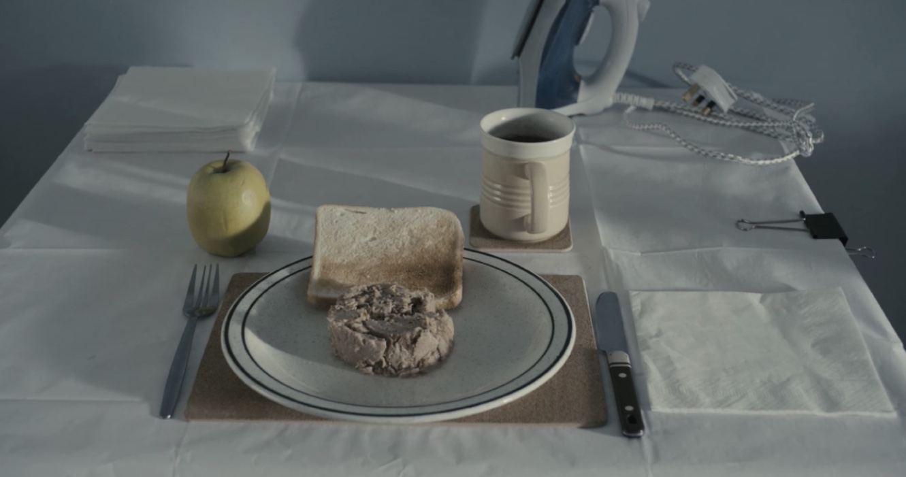

- MOVIE
- ART TERM

MOVIE
Life for the unassuming John May (Eddie Marsan Happy-Go-Lucky, "Ray Donovan")
has always revolved around his work for the local council in South London,
finding the next of kin of those who have died alone. Profoundly dedicated to
his work, he believes that everyone deserves a dignified exit,
and writes eulogies and organizes funerals for those who wouldn't have
them otherwise. But when a new case - an elderly alcoholic in a flat directly
opposite his own - hits him harder than usual, he journeys outside London to
track down the man's long-abandoned daughter (Joanne Froggatt "Downton Abbey").
Against the odds, the two lonely souls are drawn to each other - and John's
outlook starts to open to life's possibilities. (C) Tribeca